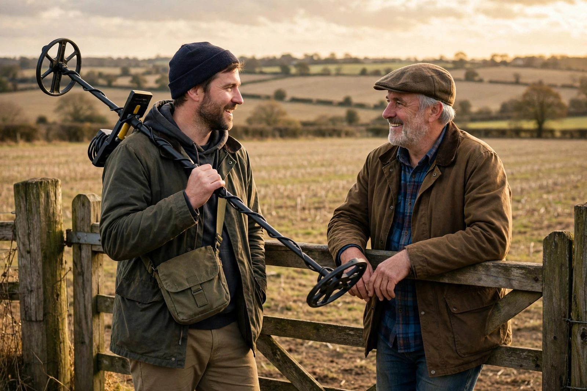

Permissions and where to hunt

The single most important skill in metal detecting isn't swinging the coil — it's knowing where you're allowed to dig. The rules vary wildly: one town welcomes detectorists in its parks, the next fines them. This guide covers how to sort out permissions, so you can hunt with a clear conscience and no risk of a ticket.
The golden rule: permission first, digging second
Never assume you can detect somewhere just because it's open ground. A playing field, a woodland path, and a village green can all have different rules, different owners, and different enforcement. The safe approach is always the same: identify who controls the land, ask them, and get a yes before you dig a single hole. It feels like overkill until the day a parks officer watches you dig without authorization.
Public parks and municipal land
Rules for city and town parks differ from place to place. Some municipalities allow detecting as long as you leave no trace; others ban it outright or require a permit; still others have never thought about it and default to "no" when asked. The only way to know is to ask the parks department directly — by phone or email so you have a record of the answer.
When you ask, be specific and friendly: mention that you always fill your holes, remove trash you find, and will follow any rules they set. Some towns issue a permit for a small fee or just log your name. If the answer is no, accept it gracefully — arguing creates the reputation that gets detecting banned elsewhere.
Beaches
Beaches are the most beginner-friendly public hunting ground, but they're not a free pass. Municipal or county beach rules may restrict where and when you can detect — some only allow it early morning or off-season, and some charge for or require a beach-use permit. State, provincial, and national beaches and parks are often completely off-limits to digging, so check before assuming the rules of one stretch of sand apply to the next. Swim areas and volleyball courts are productive, but respect posted hours and lifeguards' authority.
Schools and playgrounds
School grounds are popular targets for beginners chasing modern coins, but schools are private property with real security concerns. Detecting during school hours is inappropriate and will attract the wrong kind of attention. If you want to hunt a school field, contact the school administration and ask — weekends and holidays only, and be prepared for them to say no. Playgrounds deserve extra care regardless: fill every hole perfectly, because these are grounds children play on, and a half-filled hole is a twisted ankle.
Private land: your best long-term option
Private farmland, old homesites, and rural property are where the oldest and most interesting finds come from — and they all require the landowner's permission. Ask in person when you can: introduce yourself, explain the hobby honestly, and offer to show them what you find. Many landowners are curious rather than suspicious, especially if you're clear about how you dig and how you leave the land.
Get permission in writing — even a simple signed note with the date, the land described, and the landowner's name. It protects you if anyone questions you, and it settles the important question of who keeps what. Agree on finds up front: a common arrangement is that everyday finds are yours and anything valuable or historically significant is split or goes to the landowner. Whatever you agree, honor it exactly. One greedy story spreads fast and closes doors for every detectorist in the area.
Always respect the land: close gates, don't trample crops, stay off fields after harvest agreements end, keep dogs and vehicles where the owner says, and take your trash — and other people's trash — with you.
Places that are off-limits
Some places are simply not for detecting. Archaeological sites, historic battlefields, and protected heritage sites are legally protected — digging there is a crime in many jurisdictions, not a hobby. National parks and many state and provincial parks forbid metal detecting outright. Cemeteries are off-limits for obvious reasons of respect. If a site has any archaeological, historic, or protected status, hunt somewhere else.
Also watch for easements and utility corridors: even on land where you have permission, call before you dig if there's any chance of buried cables or pipes. A hand-dug plug of turf won't damage much, but it's worth being certain rather than sorry.
Leave no trace, every time
Every permission you hold depends on good behavior. Cut clean plugs, replace them neatly, and leave the ground looking untouched. Pick up litter — even when it's not yours, especially when it's not yours. Detectorists who leave no trace get invited back; detectorists who leave scars get the whole hobby a bad name.